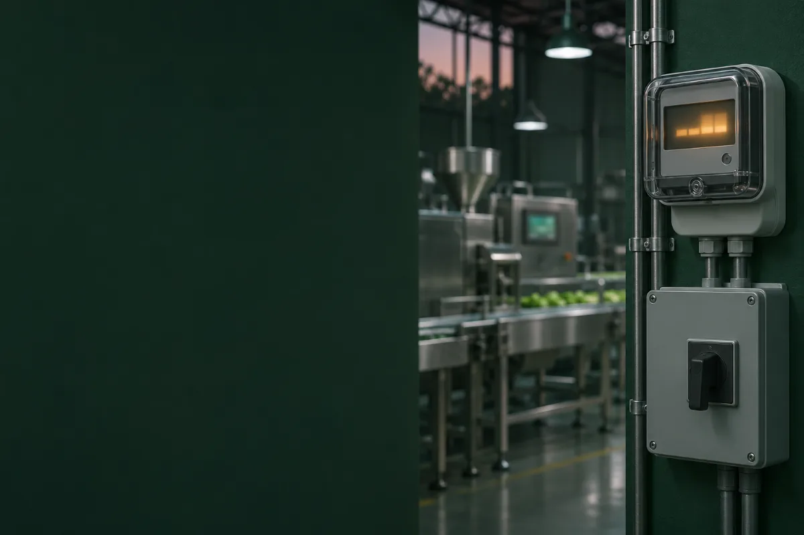

01AI · ค่าการปล่อยของ อบก.
Carbon Calculator
แต่ละหน่วยงานเรียกกิจกรรมเดียวกันไม่เหมือนกัน การหาค่าการปล่อยที่ตรงทั้งกิจกรรมและหน่วยจึงต้องไล่ตรวจทีละรายการ

ภาพประกอบ-
กรอกกิจกรรม
พิมพ์ชื่อกิจกรรมเป็นภาษาไทย พร้อมปริมาณและหน่วย เช่น ไฟฟ้าที่โรงงานใช้ หน่วยเป็น kWh
-
เลือกค่าอ้างอิง
เลือกค่าการปล่อย (EF) จากตารางของ อบก. ที่ตรงทั้งกิจกรรมและหน่วย แล้วบันทึกรหัสค่าไว้กับรายการนั้น
-
ตรวจก่อนคำนวณ
ใช้ Python ตรวจหน่วย ขอบเขต และรหัสค่าอ้างอิงก่อนคำนวณ แล้วเก็บแหล่งที่มาและเวอร์ชันของค่าไว้ทุกครั้ง
-
ให้ AI ช่วยจับคู่ กำลังพัฒนา
กำลังพัฒนาส่วนที่ใช้ Claude API เสนอค่าอ้างอิงจากตาราง อบก. ให้ผู้ใช้กดยืนยัน ถ้าข้อมูลไม่พอ ระบบจะถามเพิ่ม หรือบอกว่าไม่พบค่าที่ตรง
ผลที่ได้
ทดสอบเครื่องคำนวณกับข้อมูลสมมติแล้ว ส่วนจับคู่ด้วย AI ยังพัฒนาอยู่